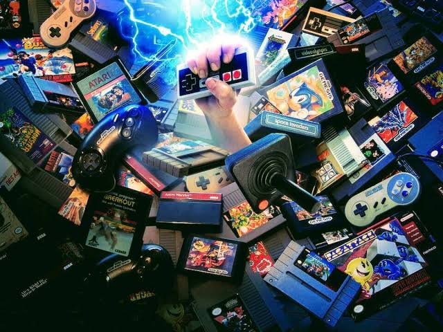
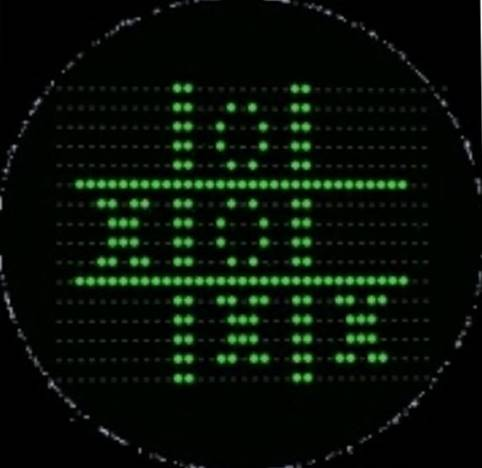
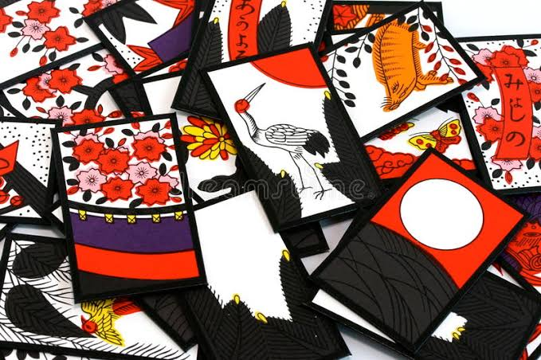

Introducción a los videojuegos
Los videojuegos hoy en día de las cosas que mas se consumen alrededor del mundo, la mayoría de las personas saben que es un videojuego (un jueguito donde disparas, corres o saltas) aunque el tema es mas complejo que eso.
Esta pagina tiene como objetivo brindarte mas información sobre los videojuegos. ya sea su historia, los juegos mas importantes en la historia de los videojuegos, las empresas, etc.
Historia de los videojuegos (EL PRIMER VIDEOJUEGO)
La historia de los videojuegos se remonta al inicio de la de década de 1950, el primer videojuego conocido seria Nought and crosses, también llamado OXO, desarrollado por Alexander S. Douglas en 1952. Este juego era una versión computarizada del 3 en raya que se ejecutaba en la EDSA y permitia que el jugador jugara contra la maquina.
Nintendo
Hoy en día Nintendo es una de las compañías de videojuegos mas famosas del mundo (incluso con su sede en Japón) aunque no siempre fue así, su creador Fushahiro Yamahuchi empezó elaborando naipes japoneses en fabricas en Kioto y poco a poco se adentraba más y más al mundo digital.
